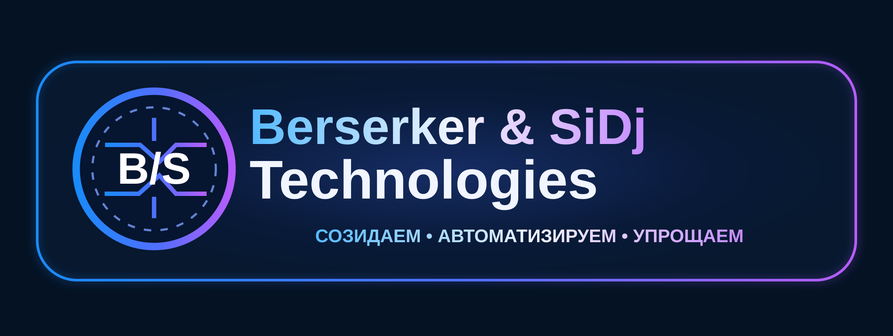

⌨️
Программы и утилиты
Обработка данных, преобразование файлов, автоматизация регулярных операций.
Превращаем сложные задачи в удобные инструменты. Экспериментируем с кодом, автоматизацией и искусственным интеллектом.
Созидаем • Автоматизируем • Упрощаем

Berserker & SiDj Technologies — неформальная творческая IT-лаборатория. Здесь идеи превращаются в практические инструменты: программы для локальной работы, обработка файлов, браузерные решения и автоматизация с помощью ИИ.
Обработка данных, преобразование файлов, автоматизация регулярных операций.
Расширения, надстройки и прототипы для комфортной цифровой среды.
Исследуем новые способы упрощать рутинные задачи и рабочие процессы.
На этой странице опубликованы название, девиз и векторная адаптация фирменного знака. Дата публикации фиксируется историей GitHub-коммитов.
Это не официальная регистрация товарного знака или юридического лица. Подробности — в паспорте бренда ↗.